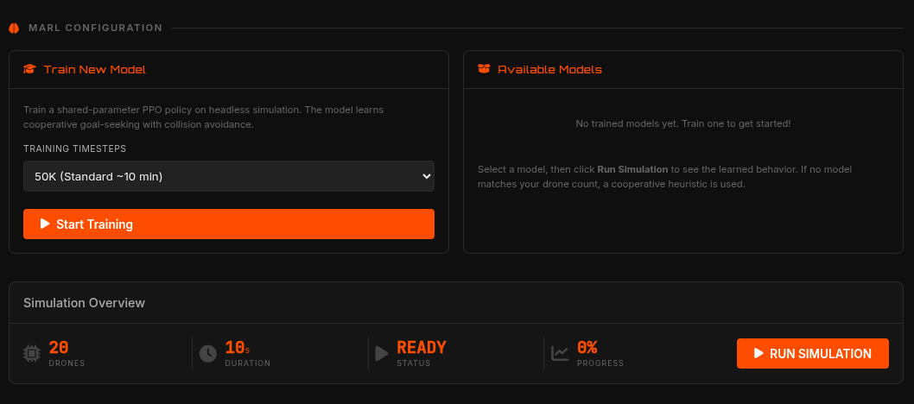

Multi-Agent Reinforcement Learning (MARL)
PyBullet Swarm Sim provides first-class support for Reinforcement Learning (RL). By deeply integrating with Gymnasium and Stable-Baselines3, the platform bridges the gap between rigid-body physics simulation and state-of-the-art policy optimization.

Use Cases & Requirements
While classical algorithms (like Flocking or PSO) rely on explicit mathematical rules, MARL allows drones to learn optimal behaviors through trial and error. This is critical for discovering complex strategies such as cooperative collision avoidance, adversarial evasion (for Battle Mode), and decentralized target tracking in cluttered environments.
Requirements: To enable RL features, install the optional dependencies:
pip install -e ".[rl]"Technical Implementation
The core of our RL integration is the custom Gymnasium environment: MARLSwarm-v0. Instead of training $N$ distinct neural networks, we utilize parameter sharing. A single Proximal Policy Optimization (PPO) policy is trained, but each drone queries it using decentralized, ego-centric observations.
- Observation Space: Ego-centric relative positions of the nearest neighbors, relative vector to the global target, and current velocity.
- Action Space: Continuous 3D target velocity vectors mapped directly to the low-level PID attitude controllers.
- Reward Function: Dense rewards for moving closer to the target, coupled with severe sparse penalties for peer-to-peer collisions.
Command-Line Training
You can train policies headlessly using the built-in training runner. This script orchestrates the PPO algorithm, sets up the vectorized environments, and logs progress.
python -m swarm_sim.training.marl_train --timesteps 100000 --drones 5 --run-name initial-marlOnce training completes, the policy is serialized and saved as a .zip checkpoint inside the models/ directory.
Dashboard Integration
As shown in the image above, the Web Dashboard features a dedicated RL Training Panel. This provides a user-friendly way to democratize AI research:
- Specify the number of training timesteps.
- Launch the training asynchronously directly from the UI.
- Monitor the PPO learning metrics via live Server-Sent Events (SSE) streaming logs.
- Once finished, the new model instantly appears in the algorithm dropdown, ready to be deployed as a standard algorithm against classical baselines in Battle Mode.